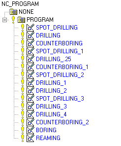

Estimated time to complete: 30–40 minutes
In this project, you will create a drilling program to spot drill, drill, bore, counterbore, and ream the holes while applying acceptable standard machining techniques.

Launch the Create a drilling program activity.